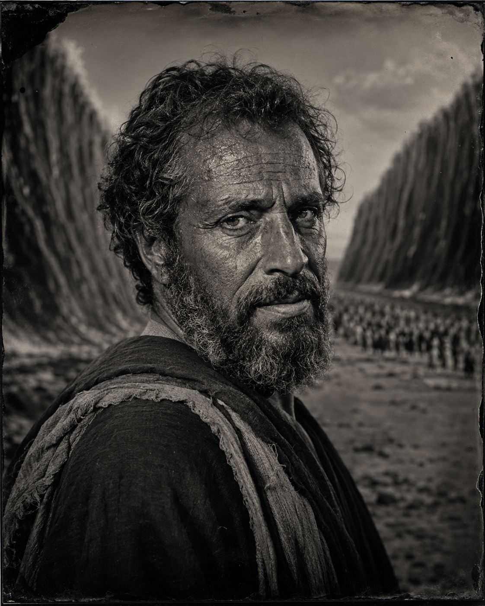
Moses
Deliverer, prophet, and mediator of the covenant.
Open StudyPeople
The Bible is filled with real people living inside God’s larger story — kings, prophets, families, enemies, disciples, doubters, failures, and witnesses.

Deliverer, prophet, and mediator of the covenant.
Open Study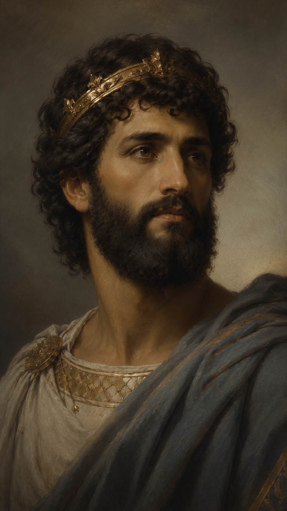
Shepherd, king, psalmist, and flawed covenant ruler.
Open Study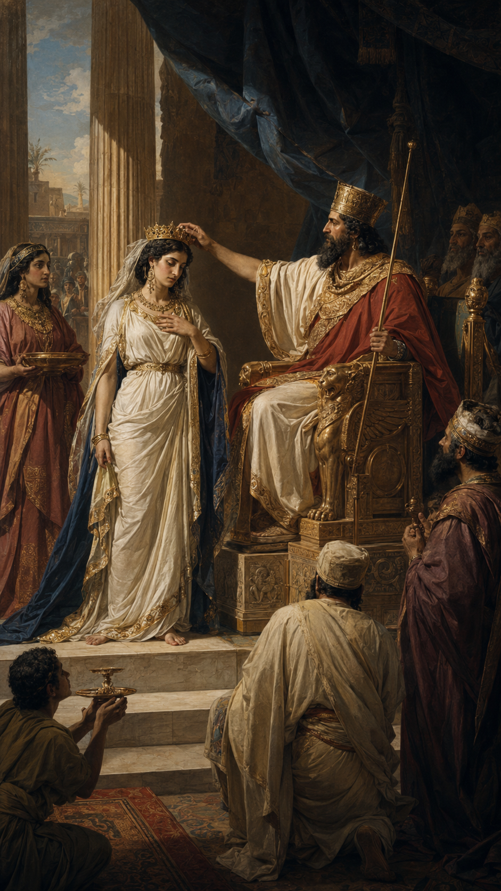
Queen in exile whose courage preserved her people.
Open Study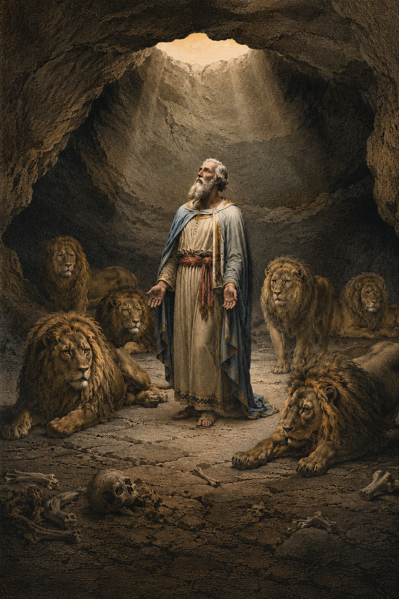
Exile, interpreter, and faithful witness under empire.
Open StudyMother of Jesus and witness to God’s promise.
Open Study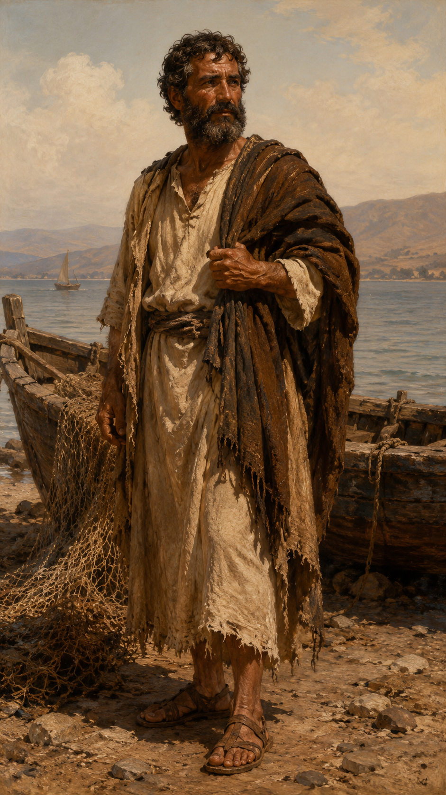
Disciple, denier, restored witness, and apostle.
Open StudyFormer persecutor sent to preach Christ among the nations.
Open Study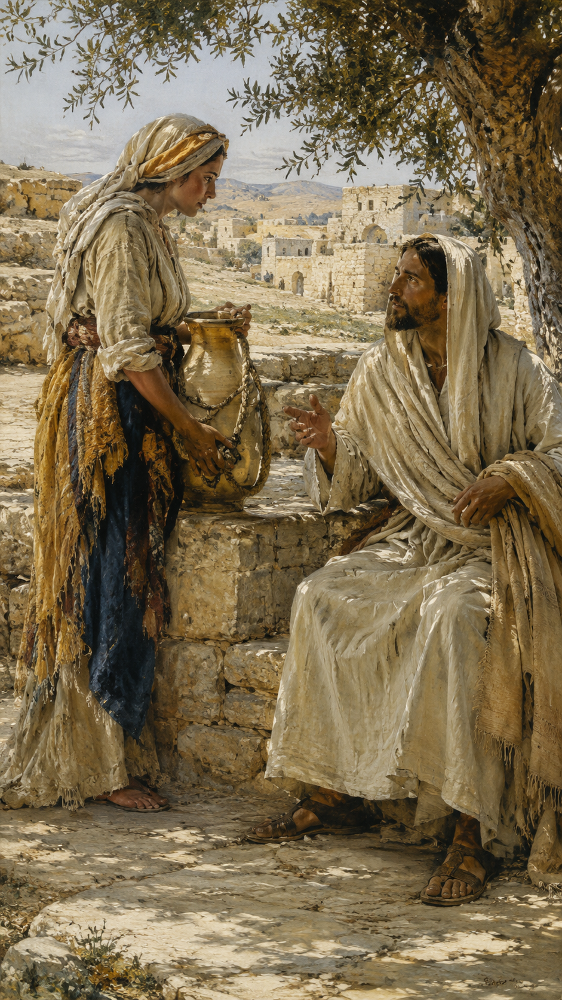
Samaritan witness who met Jesus at Jacob’s well.
Open Study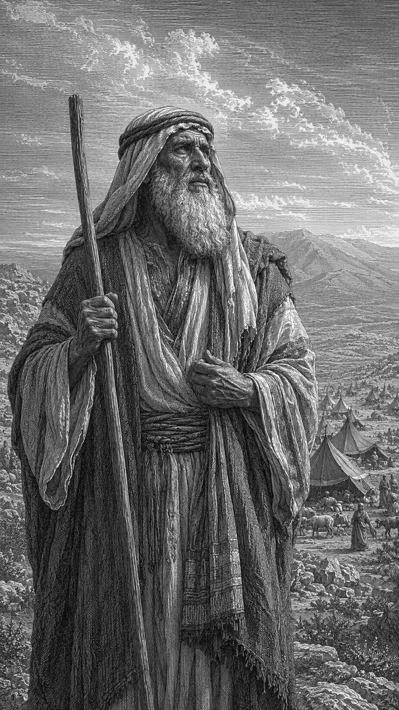
Father of promise called to walk by faith.
Open Study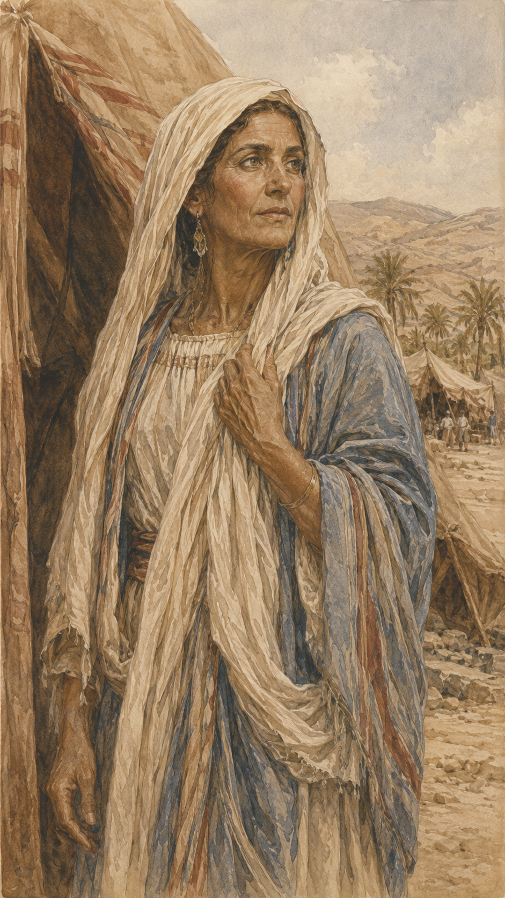
Matriarch of promise who received God’s impossible word.
Open Study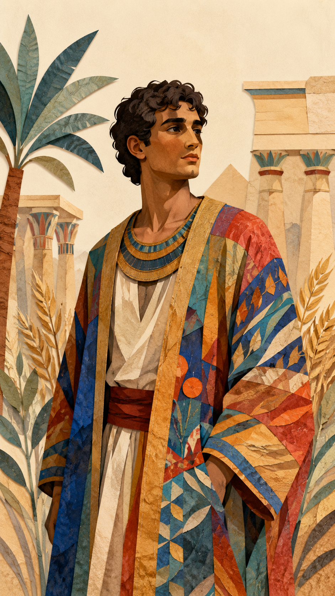
Dreamer, exile, and providential preserver of his family.
Open Study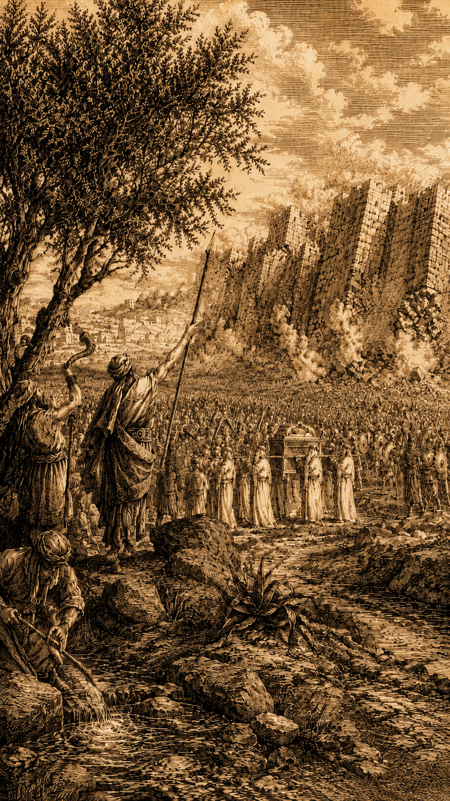
Leader who carried Israel into the land of promise.
Open Study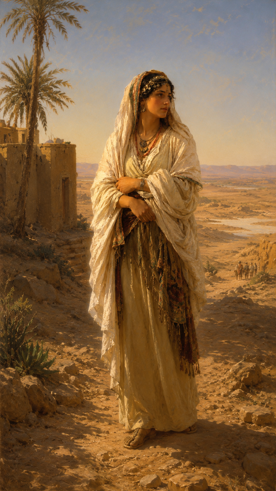
Moabite widow whose loyalty entered the Messianic line.
Open StudyKing of wisdom, temple, glory, and divided desire.
Open Study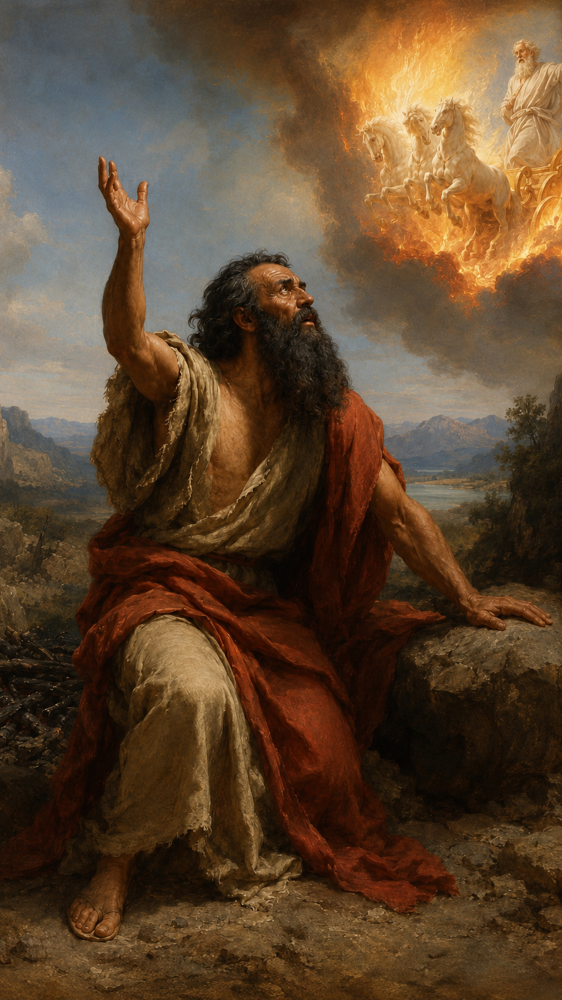
Prophet who confronted idolatry and called Israel back.
Open StudyForerunner who prepared the way for Jesus Christ.
Open Study